实际结果与数值敏感性。Linear surrogate · one-way coupling · no coalescence
README · 中文验证报告 · Run index · Convergence
本报告只读取已关闭run。基础单位SI；当前为线性声场、径向响应替代模型、单向耦合，不是经生理标定的SonoVue预测。
| Frequency | Basis/direct relative L2 | Masked phase RMS (rad) |
|---|---|---|
| 2 MHz | 1.56249e-07 | 4.74772e-07 |
| 1 MHz | 9.78255e-08 | 3.18591e-07 |
CUDA binary的HDF5依赖失败保留；本次正式声学demo使用CuPy GPU。整个域不保存完整时间历史，末4周期仅记录ROI。
| Case | N | Time (ms) | Mean lateral displacement (µm) | NN initial → final (µm) | Largest cluster initial → final | Near-contact final |
|---|---|---|---|---|---|---|
| migration/baseline | 150 | 10 | 0.376577 | 271.21 → 271.78 | 1 → 1 | 0 |
| migration/shifted | 150 | 10 | 0.328535 | 271.21 → 271.75 | 1 → 1 | 0 |
| aggregation/baseline | 32 | 20 | 21.2953 | 9.6309 → 2.5001 | 3 → 32 | 1 |
| Secondary force | Final NN (µm) | Largest cluster | Near-contact fraction |
|---|---|---|---|
| ON | 2.50015 | 32 | 1 |
| OFF | 7.67374 | 6 | 0.0625 |
两次初始位置、粒径、源控制量一致。此对照只支持当前数值模型内部归因，不代表真实微泡近场聚集定律已验证。
相同初始ID，两个相位图样的末位置向量差：均值 0.612719 µm，最大 2.67958 µm。
结论：尚未证明聚集轨迹收敛。20 ms聚集对照的同ID末位置RMS差为 5.718 µm，平均位移相差 6.126%。最近邻距离已接近接触直径，其稳定不能证明单泡轨迹准确。
| Scenario | Pressure L2 dx comparison | Gradient L2 | Primary-force L2 | dt endpoint RMS (µm) | dt NN relative difference |
|---|---|---|---|---|---|
| migration | 0.034328 | 0.024316 | 0.037161 | 1.8634e-11 | 3.7898e-15 |
| aggregation | 0.014014 | 0.011287 | 0.012337 | 5.7185 | 0.00022518 |
| Scenario | Peak coarse / fine (kPa) | Center coarse / fine (kPa) | Mean displacement dt / dt/2 (µm) | NN dt / dt/2 (µm) | Grid particle endpoint RMS (µm) |
|---|---|---|---|---|---|
| migration | 14.333 / 14.333 | 14.333 / 14.333 | 134.59 / 134.59 | 271.78 / 271.78 | 0.054665 |
| aggregation | 8.4308 / 8.4299 | 8.4308 / 8.4299 | 31.247 / 29.443 | 2.5001 / 2.5007 | 4.5808 |
压力峰值和中心值使用相同每元2 kPa源控制；聚集粒子另按记录的scale放大到初始云中位PNP 75 kPa。
这些是0.1/0.08 mm及25/12.5 µs的实测差异，不把基底叠加PASS当作网格无关。几何位移限制子步仍生效，具体计数/最小步长见JSON。
首次聚集试算在逐对接触速度迭代达到上限后停止；部分状态及源文件保留。最终采用相同摩擦无关非穿透约束的整体NNLS投影，30泡接触链测试通过。
100泡开发探针因密集接触计算成本于1.941884 ms主动中断，7935状态保留。最终32泡是独立的完整20 ms演示，不能混称100泡结果。
近场secondary Bjerknes经过显式数值正则化；接触不代表融合，cluster阈值不代表黏附。Marmottant响应尚未实现，不伪造壳参数。
迁移的25/12.5 µs名义对照均产生800子步，不能独立证明时间收敛。补跑更小有效步长；聚集补充检查只覆盖0–2 ms形成阶段。
| Scenario | Horizon (ms) | Coarse / finer substeps | Endpoint RMS difference (µm) | NN coarse / finer (µm) |
|---|---|---|---|---|
| migration | 10 | 800 / 1600 | 4.64769e-09 | 271.779 / 271.779 |
| aggregation | 2 | 3346 / 6869 | 1.91871 | 2.50041 / 2.5001 |
此补充检查不改变原始主算例，也不推翻20 ms密集接触轨迹尚未收敛的结论。
- migration/baseline: max predicted |ξ|/R0 = 0.048662；该数值不认证线性替代模型的真实生理有效性。
- migration/shifted: max predicted |ξ|/R0 = 0.05185；该数值不认证线性替代模型的真实生理有效性。
- aggregation/baseline: max predicted |ξ|/R0 = 0.21881；该数值不认证线性替代模型的真实生理有效性。
| f (MHz) | Grid | Nt | ROI sensors | Solver seconds | Sampled device VRAM MiB |
|---|---|---|---|---|---|
| 2 | [256, 128, 128] | 2790 | 280645 | 27.172 | 3156.0 |
| 2 | [256, 128, 128] | 2790 | 280645 | 26.565 | 5302.0 |
| 2 | [256, 128, 128] | 2790 | 280645 | 26.624 | 7448.0 |
| 2 | [256, 128, 128] | 2790 | 280645 | 26.515 | 9218.0 |
| 2 | [320, 160, 160] | 3510 | 516375 | 93.660 | 5190.0 |
| 1 | [256, 128, 128] | 3038 | 280645 | 29.477 | 3394.0 |
| 1 | [256, 128, 128] | 3038 | 280645 | 29.006 | 5662.0 |
| 1 | [256, 128, 128] | 3038 | 280645 | 29.079 | 7872.0 |
| 1 | [256, 128, 128] | 3038 | 280645 | 29.015 | 9496.0 |
| 1 | [320, 160, 160] | 3773 | 516375 | 100.871 | 5650.0 |
显存是整设备0.5 s采样峰值，不是进程私有分配上界。生产声场全部实际在RTX4090执行。
外置PML后FFT网格为288×160×160；细档为360×200×200。这是由metadata物理网格与PML宽度计算的实际求解网格。
- 配置、接口、安装与限制：../README.md
- 测试证据：TEST_RESULTS.txt
- 全帧数据检查：RESULT_INTEGRITY.json
- 源码与运行输出身份：DELIVERY_MANIFEST.json
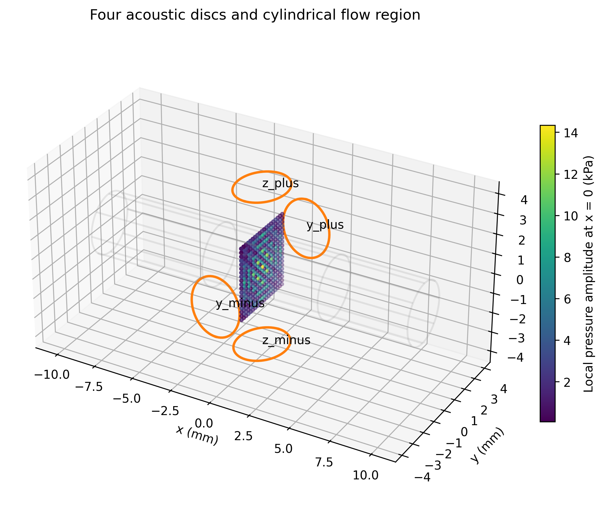
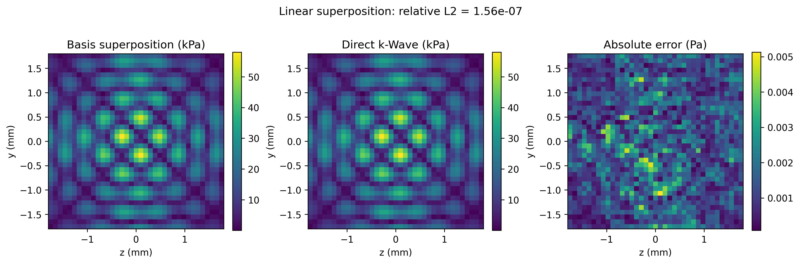
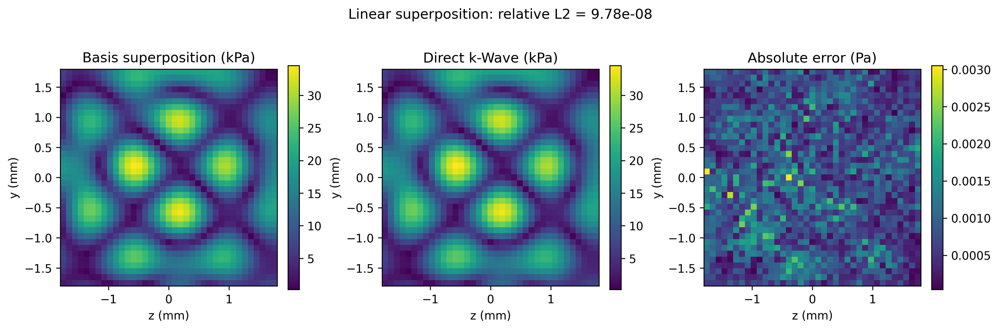
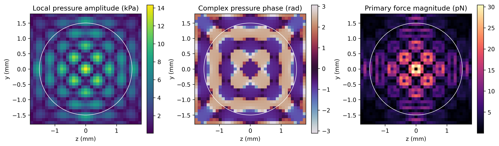
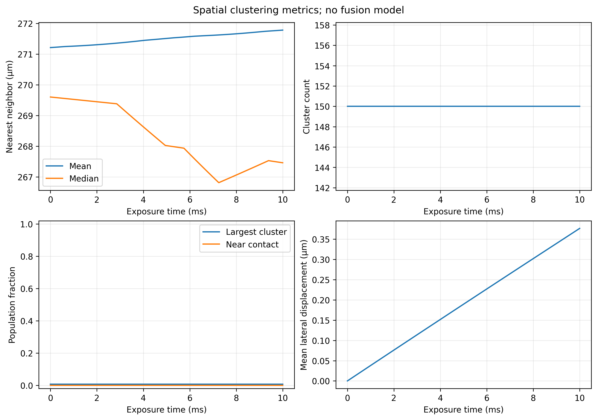
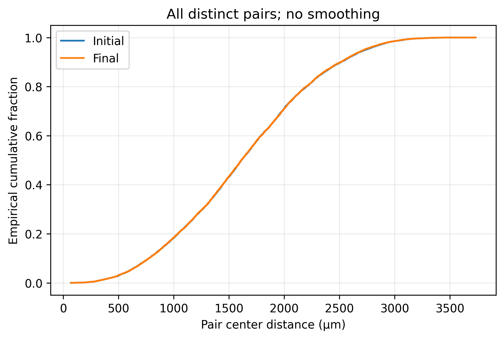
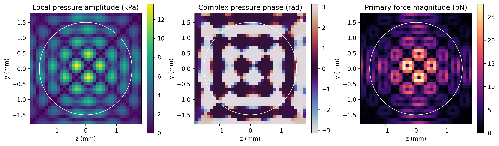
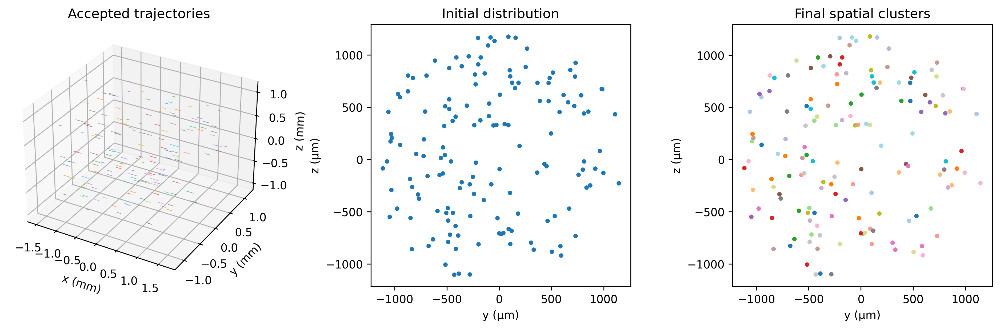
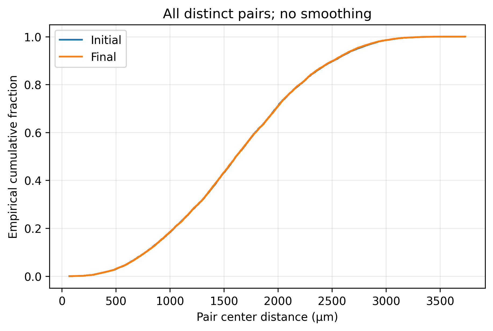
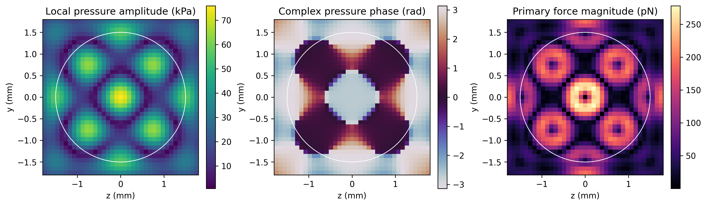
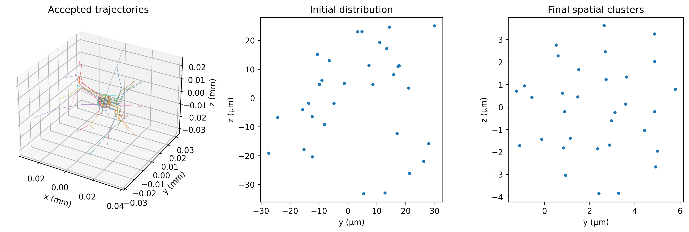
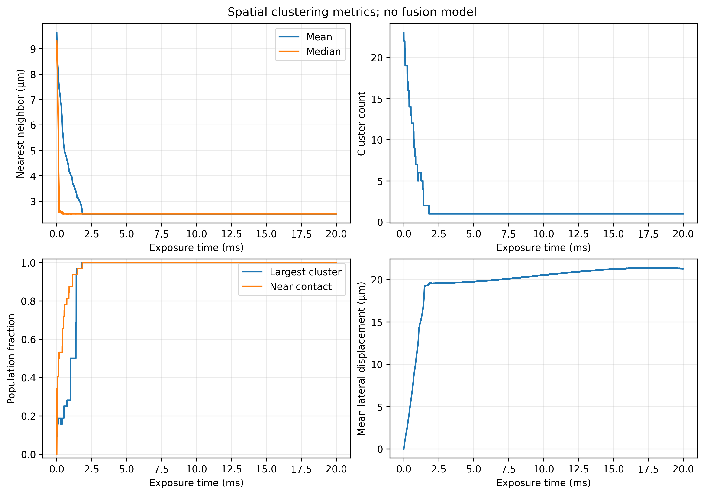
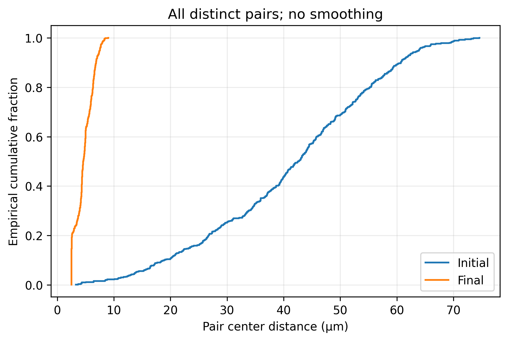
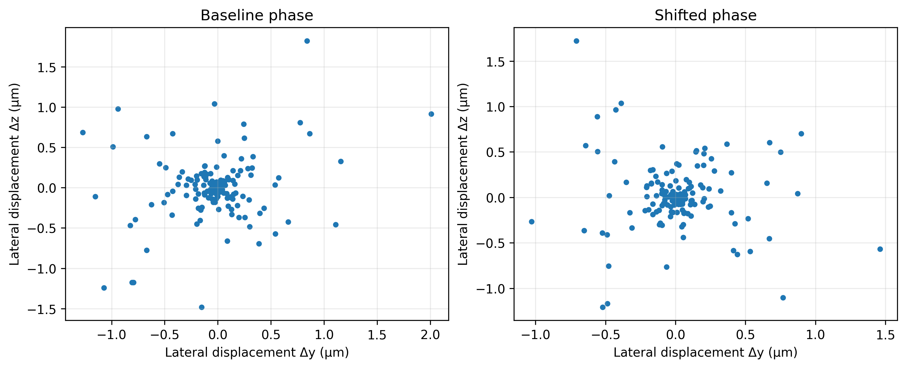
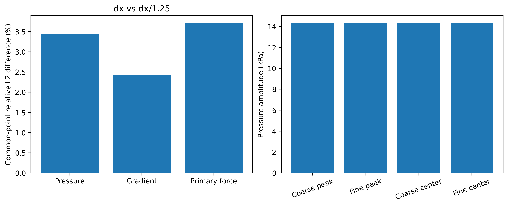
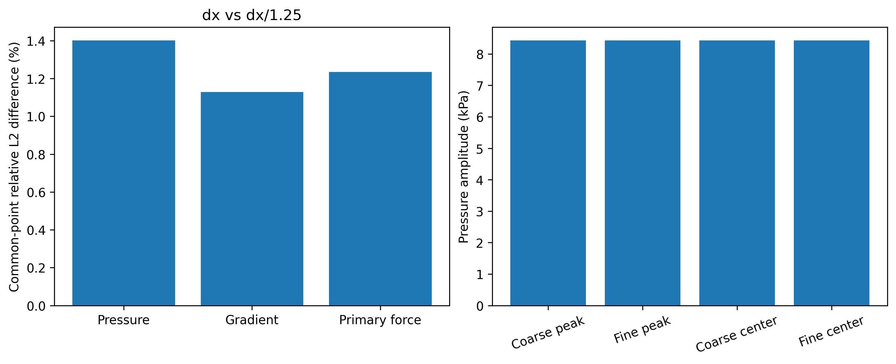
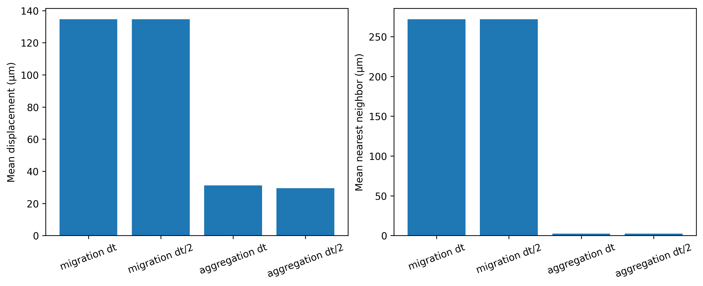